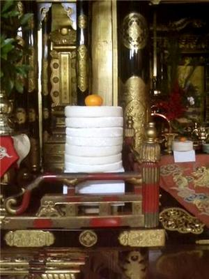
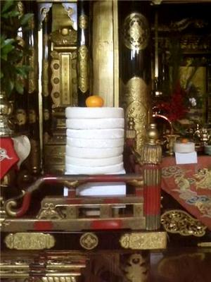
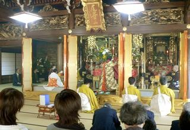
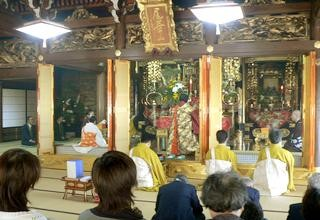
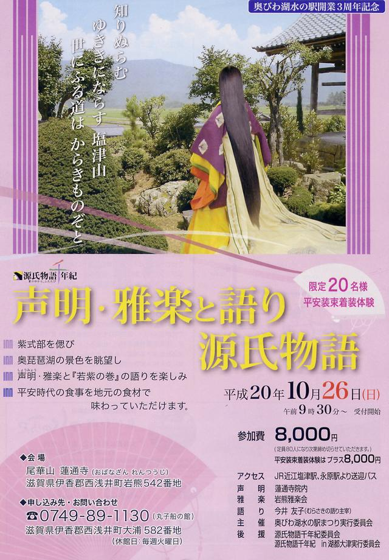
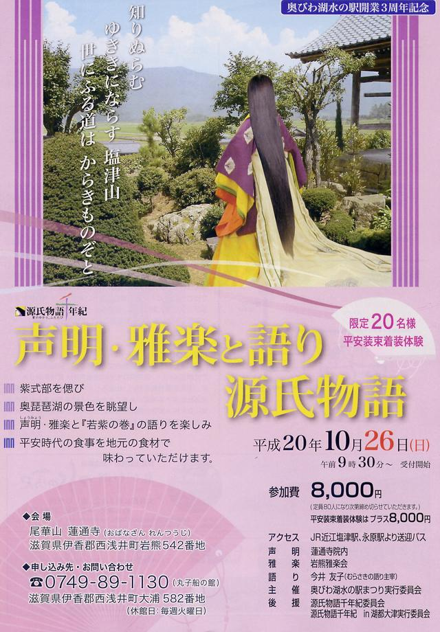

年間行事・法要案内
蓮通寺で執り行われる年間行事についてご紹介いたします。
年間行事
修正会、涅槃会（大日堂）、春季彼岸会、春季永代経、灌佛会、盂蘭盆会、地蔵盆、秋季彼岸会、報恩講（二昼夜）
＜修正会＞
 

御本尊にお鏡餅五段一対、御開山以下の御影前にはお鏡餅二段一対を供え、それぞれ上に橙を載せ、歳旦にあたりこれからの一年お念仏を慶び報恩感謝いたしますと手を合わせ勤行いたします。
＜春・秋彼岸会＞
昼の時間と夜の時間が同じとなる一番すごしやすい時季に、我々が住む此岸より、涅槃寂静の彼岸を思い報恩感謝のお念仏をする行事です。當院においては、春・秋の彼岸会には『往生禮讃』をお勤めいたします。
＜灌佛会＞

子ども達が花をお飾りし甘茶をかけお釈迦様のお誕生をお祝いします。
＜盂蘭盆会＞

先祖に感謝し歓喜のお念仏をさせていただくことを感謝する行事で、當院では八月十五日に執り行います。
＜報恩講＞
 

親鸞聖人の御恩に感謝する浄土真宗における最大の行事です。當院では十一月の第一金曜午後から第一日曜午前中にかけて二昼夜の法要を営みます。土曜のお昼は「お講」が行われ、昔ながらの打ち豆の入ったお講汁を食して法の話に花がさきます。その夜には「子供報恩講」がおこなわれ、子供達の可愛らしいお念仏の声が堂内に響きわたります。最終日の結願日中は雅楽の入る法要で、外陣の助音衆の研鑽され綺麗にそろった声明と雅楽が調和し、極楽の様相を感じさせて頂けるありがたい荘厳となり無二の勤行を味あわせていただけます。
＜特別行事＞

 

源氏物語千年紀記念 『声明・雅楽と語り 源氏物語』を執り行いました。蓮通寺から見おろせる琵琶湖畔に紫式部が着いた湊の遺跡があることから源氏物語千年紀を記念し執り行いました。（平成二十年十月二十六日）
お問い合わせ
ご葬儀、ご法要、その他ご不明な点がございましたら、お気軽にお問い合わせください。